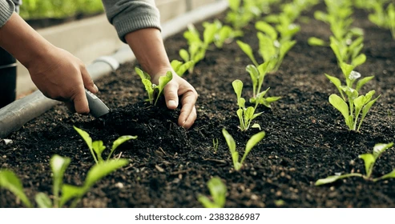

Discover the richness of farm-fresh, chemical-free produce delivered straight from our soil to your soul.
We are committed to nurturing the land and feeding communities with honesty, heart, and health.
We are a passionate organic farm committed to growing clean, chemical-free food using natural methods.
Rooted in sustainability, we work in harmony with the earth to nourish people and protect the planet.
Every crop we grow tells a story of care, integrity, and connection to nature.
Announcements

Organic Farming
Organic farming is an agricultural method that emphasizes sustainable and environmentally friendly practices. It avoids the use of synthetic fertilizers, pesticides, genetically modified organisms (GMOs), and growth hormones. Instead, it relies on natural processes, biodiversity, and cycles adapted to local conditions.
Contact Us
We’d love to hear from you!
📍 Udumalpet
📞 9876543210
✉️ greengo@gmail.com
🕒 Open Mon–Sat | 9:00 AM – 5:00 PM
📱 Follow us: Instagram | Facebook | Youtube